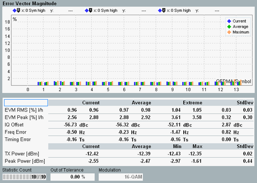

The results of the LTE eNodeB multi-evaluation measurement are displayed in several different views.
For a detailed description, see "Measurement Results".
The multi-evaluation measurement provides an overview dialog and a detailed view for each diagram in the overview. The overview dialog shows modulation, OFDM symbol power, spectrum and I/Q constellation results as diagrams. A selection of statistical results is also shown.

Most of the detailed views show a diagram and a statistical overview of results.

The results can be retrieved via the following remote commands.
Remote command:The results can be retrieved via the following remote commands.
Remote command: